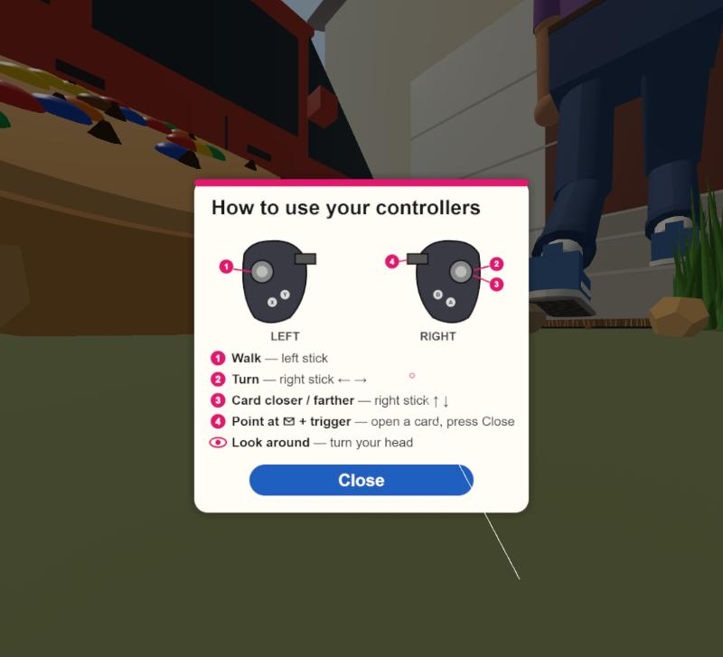
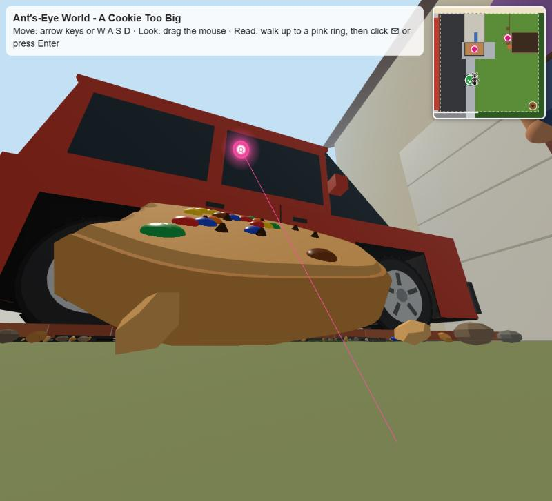
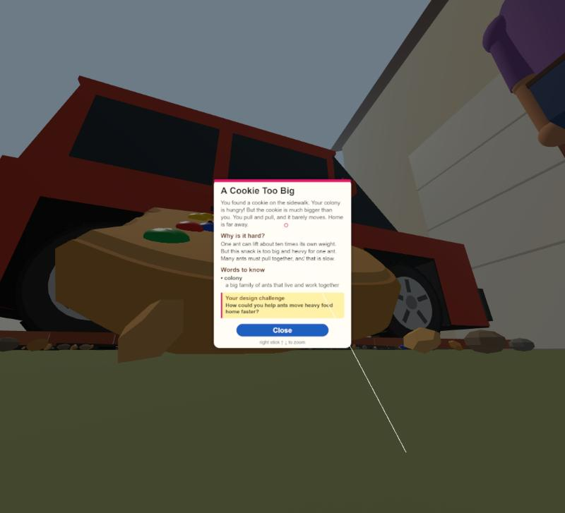
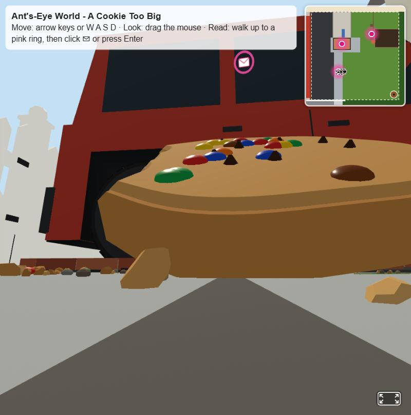

컴퓨터에서 흉내 낸 VR로 찍은 화면 · 실제 Quest 확인은 아직 · 아직 GitHub에 올리지 않음

① 들어가자마자 안내판VR에 들어가면 정면에 바로 뜸. 설명 5줄, A/X 줄 없음. 오른손 선으로 Close + 트리거 → 닫히고 걷기 시작. 오른쪽 위 Exit VR · ? Controls 버튼 없음.

② 바로 앞에서 ✉ 겨누기오른손 선만 나옴 (왼손 선 없음). 과자 가장자리에서 50 m 안이면 선이 분홍 + 링이 빛남. 더 멀면 흰 선이고, 트리거를 당기면 "Walk closer to read this!"만 뜸. "Read the message" 문구 없음.

③ 트리거 → 카드 바로 열림카드가 시선을 따라옴 (고개를 60° 돌리면 0.1초에 60%, 0.3초에 95% 따라옴, 위아래도). 아래 글은 "right stick ↑ ↓ to zoom"만. A/X, 왼쪽 트리거는 아무 일 없음.

④ 컴퓨터 화면분홍 "Read the message" 버튼 없음. 위 안내 줄: "Read: walk up to a pink ring, then click ✉ or press Enter". 바로 앞에서 ✉ 클릭 또는 Enter → 카드. 멀리서 클릭 → "Walk closer to read this!".
"바로 앞" 거리: 과자와 현관 매트는 단단해서 한가운데까지 못 가므로, 개미가 멈추는 자리(물건 가장자리)에서 50 m 안으로 정함. 세 곳 모두, 걸어서 갈 수 있는 쪽에서 멈추기 약 50 m 전부터 열림을 확인 (과자 4방향, 매트 3방향, 거미줄 1방향). 걷는 속도로 VR 약 1초, 키보드 1초 미만.
확인 못 한 것: 실제 Quest에서의 선 방향, 카드가 따라오는 느낌(어지러운지), 안내판 글씨 크기. 써 보시고 알려 주세요. 나갈 때는 Meta 버튼.